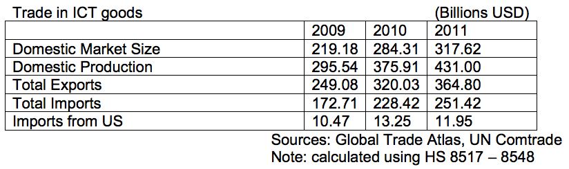

The 12th Five-Year Plan (12th FYP), announced in 2011 and covering years 2012-2017, included extensive and specific policy support for many sectors of the ICT industry. These sectors have been designated as Strategic Emerging Industries (SEIs), including "next generation information technology" such as high-performance integrated circuits (IC), cloud computing, and mobile communication networks.
China has designated seven SEIs and plans to spend $1.7 trillion over the course of the FYP in order create a more robust ICT industry that will not only compete on a global scale, but provide new standards for the rest of the world's industries to follow. During the first year of the new 12th FYP, U.S. ICT exports to China decreased. This could be a result of specific Chinese Government policy support for the domestic sector, though more probably because of the sluggish world-wide economy. Total domestic consumption of ICT products (HS codes 8517 through 8548) totaled $317.62 billion. China's Ministry of Industry and Information Technology estimated the total ICT market size to be $1.48 trillion, which is presumed to include trade in services.
